Admin UX sweep
A review of every implemented screen of the Admin back office (Next 16, demo mode, synthetic data), in the Lab staff and the Client view, at 1440×900 and 390×844. Proposals stay inside the existing brand: same tokens, fonts, ADMIN badge and components; most are small CSS or ordering changes.
Pareto top 10
Ranked by impact over effort. Severity: how much it costs the persona today. Effort: S = a few CSS lines or a reorder, M = a component change, L = a new component.
Sidebar: 23 destinations, no signal of what works
Current
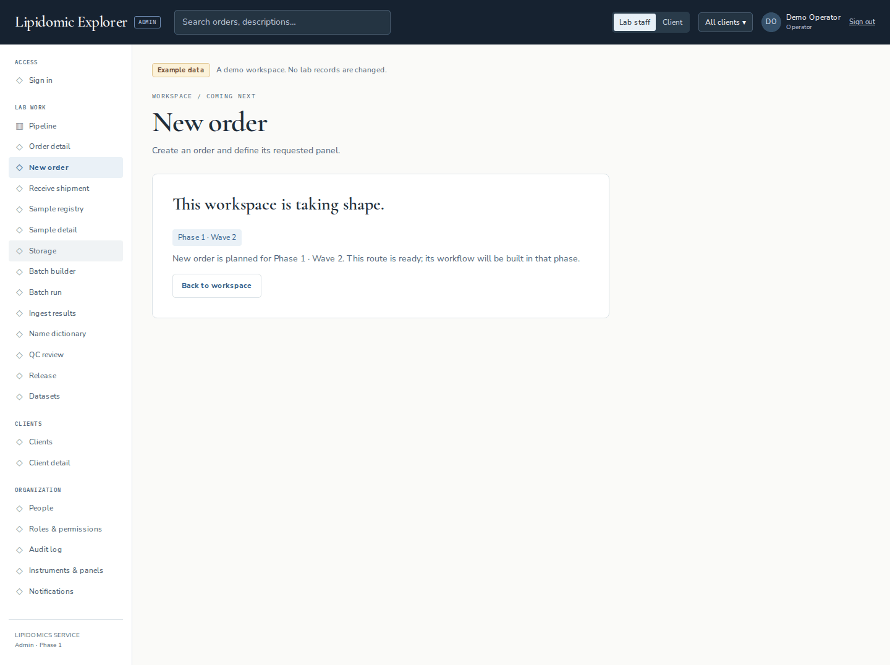
Proposal
Before
After
Why. Paula's daily loop is seven screens; today they are mixed with thirteen placeholders that look identical, so every third click lands on "This workspace is taking shape". How. Keep only working screens in the groups (ordered by the flow), drop "Sign in" when signed in, drop the detail entries (detail pages are reached from cards and tables, and the current "Order detail" entry is hard-wired to ORD041), add Release policy which has no entry today, and fold placeholders into a collapsed "Coming next" group with their wave tag. The blocked count next to Pipeline reuses the tile count. Same tokens, same nav classes; only the navigation list and one details change.
Form errors render grey, no summary, focus stays on the body
Current
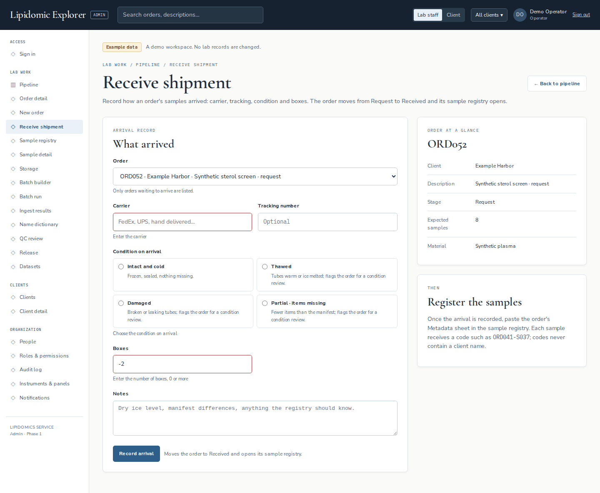
Proposal
Before
After
Error summary at the top of the form (role="alert"), links jump to the field; the first invalid field receives focus (shown with the existing 3 px blue focus ring). Field messages in --danger, 12 px, bold, with a glyph so colour is not the only cue.
Why. Validation feedback is the one moment a form must be unambiguous; today it fails the contrast of intent (grey reads as a hint) and the keyboard user is dropped at the top of the document. How. Raise the specificity of .field-error (or move the colour onto .field .field-error), set 12 px bold, prefix a glyph, add an error summary with links, and call focus() on the first aria-invalid control when the action state returns errors. The same summary pattern already exists in the registry grid ("3 rows need attention"), so this is a consistency fix as much as an accessibility one.
Sample registry: the task starts below the fold
Current
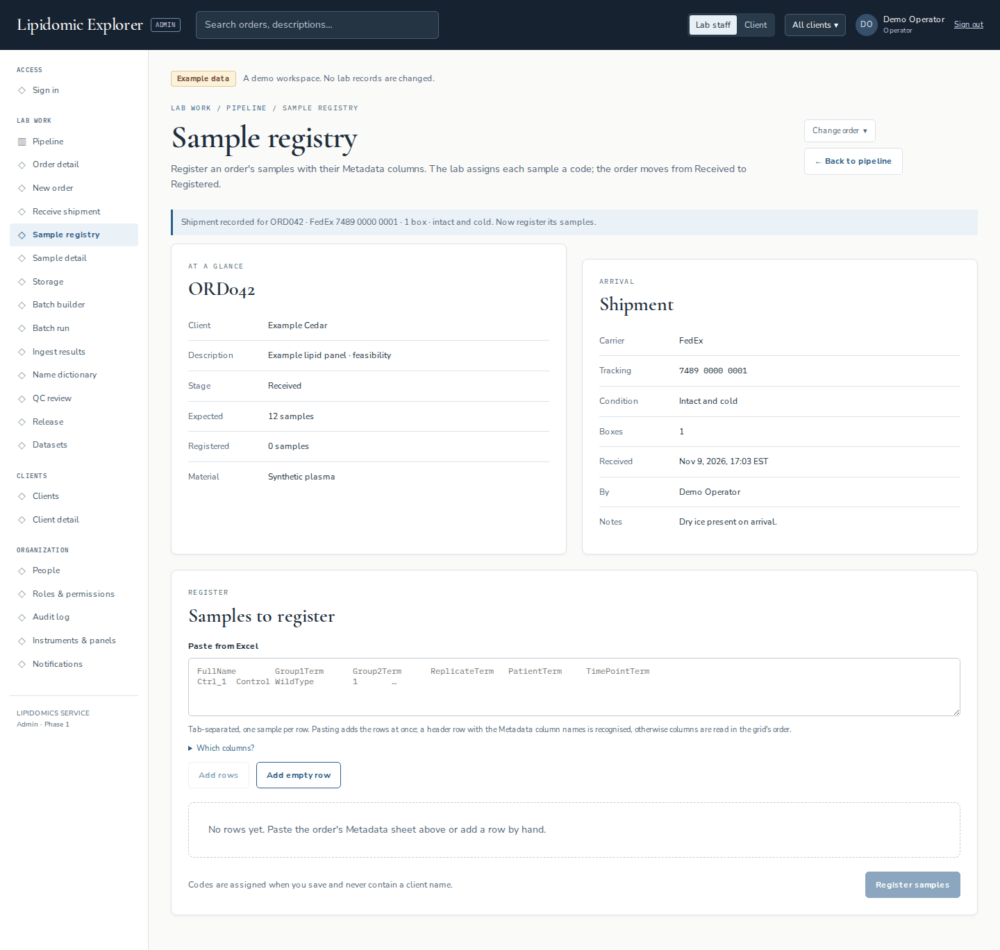
Proposal
Sample registry · ORD042
Samples to register
Why. Registering is the longest task of the receive flow; Paula arrives with the sheet in the clipboard and should see the paste box at once. The facts are context, not the job. How. One compact facts strip (two lines) replaces the two panels; shipment details move behind a disclosure; the order code joins the title; the success banner carries the shipment summary it already has. No new component: .panel, .notice and .facts styled inline. Fix the stray margin with .facts-strip .panel { margin: 0 } (it is declared but loses to .panel + .panel), and give .heading-actions flex-wrap: nowrap at ≥1200 px.
Ingest results and Name dictionary do not follow the shell pattern; after Accept there is no next step
Current
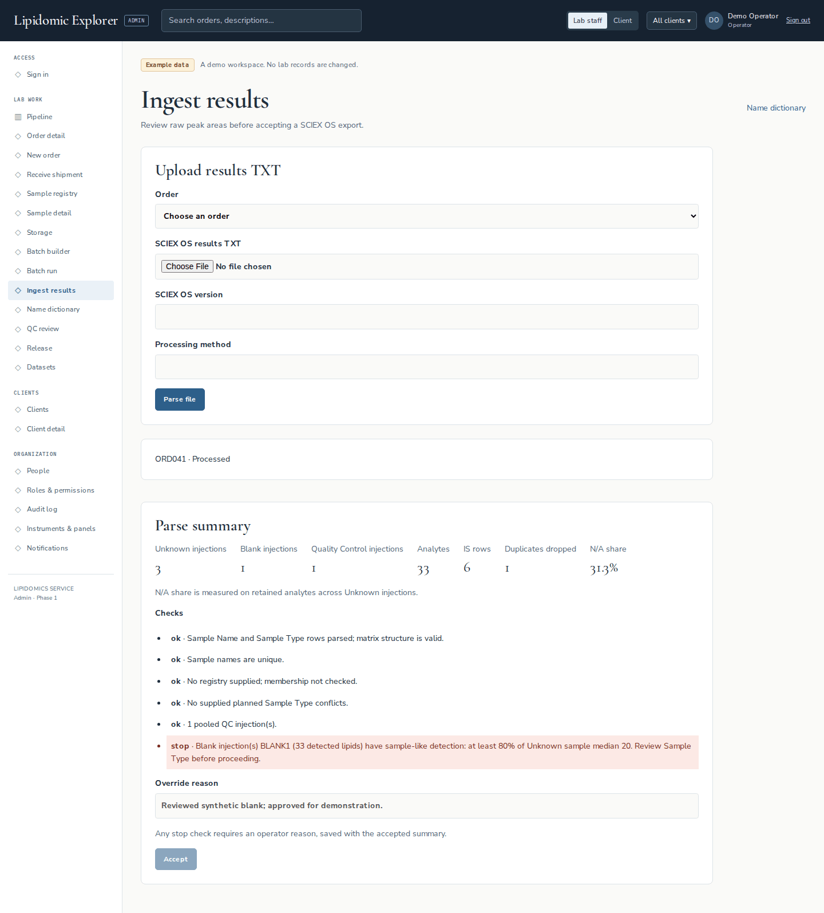
Proposal
Ingest results
- ✓Sample Name and Sample Type rows parsed; matrix structure is validOK
- ✓Sample names are uniqueOK
- !Blank BLANK1 has sample-like detection (33 lipids ≥ 80 % of the Unknown median)
Override recorded: "Reviewed synthetic blank; approved for demonstration." · Demo OperatorStop · overridden
Same for the dictionary: eyebrow + Back, "Unmapped analytes" as a table with an inline clean-name input per row (map in place, 33 at a time), the count in the panel heading.
Why. These two screens were built in a different wave and look like another product next to Receive shipment or Release: Paula loses the orientation cues (where am I, how do I go back, what happens next). The accepted state is the hand-off to Stephania's side and currently ends in a dead stop. How. Reuse .page-heading with eyebrow and .heading-actions, .field inputs, .summary-tile for the metrics, .check-row for checks (icon + word, not "ok ·" text), and a success .notice with the "Build dataset v1" link. Hide the form after acceptance instead of leaving a disabled Accept.
Dataset version page: the signer's action is at the bottom
Current
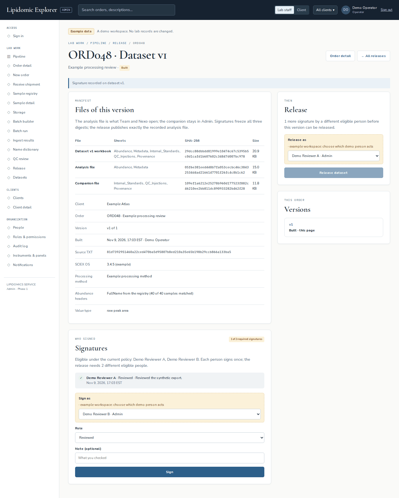
Proposal
ORD048 · Dataset v1 Built · awaiting signatures
Sign this version
You are eligible under the current policy. Signing freezes the three digests below.
Files of this version
| Analysis Abundance, Metadata | 5b85572ed378…ddaf0dcopy | 15.0 KB |
| Companion IS, QC, Provenance | 9e275f35fb0b…6e91bcopy | 11.8 KB |
| Workbook | 277b4e2f8c8c…45ef11copy | 20.9 KB |
Why. Stephania opens this page to do one thing: sign, or release. The page is organised for an auditor (manifest first) rather than for the person whose turn it is. How. A three-step status strip under the title (Built → Signatures n of m → Release) states where the version is; a "Your turn" card (tint background, --blue border) holds the one available action, computed from the policy and the signed-by set that the page already knows; the manifest keeps its table with digests truncated to 12 characters plus copy, with the full digests behind a disclosure. The signatures list, versions and withdraw stay where they are. The same strip serves the released state (Released → Team project → Withdraw).
Pipeline board shows 4.8 of 10 stages at 1440
Current
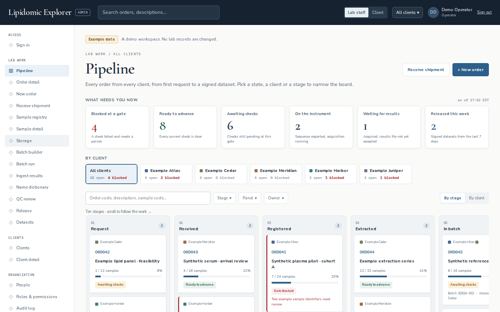
Proposal
Mock at reduced scale. Columns 200 px (cards keep every element, paddings 12 px), empty stages collapse to a 36 px rail with the name turned vertical, and a stage minimap above the board shows all ten counts (red when the stage holds a blocked order), highlights the visible range and scrolls a column into view on click.
Why. The board is the lab's home and the question it answers is "where is everything"; at 1440 with the sidebar it answers it for half the stages. Shrinking ten columns to fit 1,162 px is not viable (116 px columns), so the fix is to make the hidden half one glance and one click away. How. Minimap = ten small buttons reusing .column-count styling and scrollIntoView; collapsed rails reuse .kanban-column with writing-mode: vertical-rl; column width 242 → 200 px and card padding 14 → 12 px. With two stages empty, ~6.5 columns fit. This also replaces the 11 px scroll hint, which can go.
Success feedback looks like information
Current
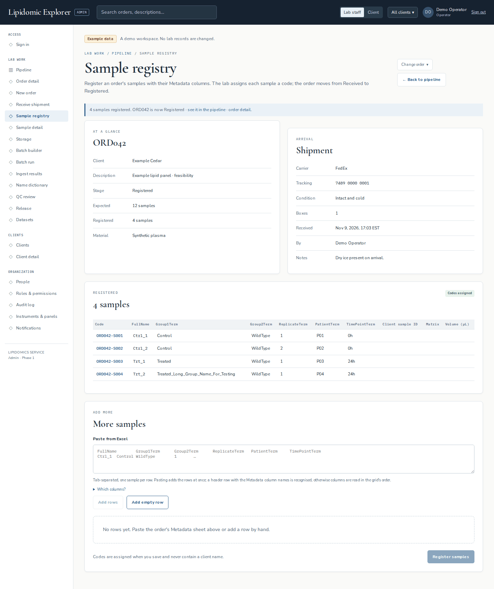
Proposal
Before
After · one pattern, three tones
Tones map to existing tokens: success = --ok/--ok-tint, info = --blue/--tint, problem = --danger/--danger-tint. Lead sentence bold, then the state, then one primary next action as a small button.
Why. Every mutating action in the app already produces a banner, which is good; what is missing is the signal that it worked, and the hand-off to the next screen in the flow (registry → batch builder, accept → build, sign → release). How. Add .notice.success and .notice.error modifiers (six CSS lines), bold the lead, and render the next step as a .button inside the banner. Keep role="status". Apply the same markup on Ingest results (replacing the bare status box) and on the dataset page banners.
Release list: nine identical primary buttons, also on released orders
Current
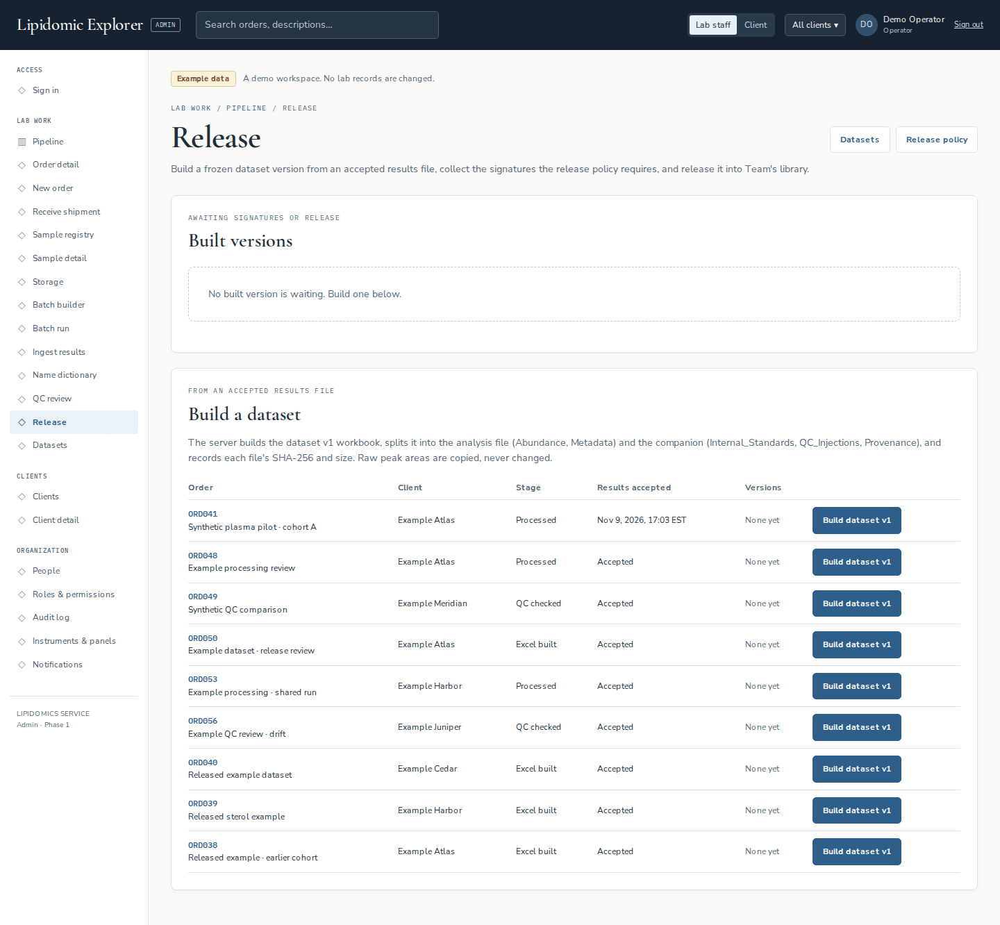
Proposal
| Order | Client | Stage | Results | Versions | |
|---|---|---|---|---|---|
| ORD041 Synthetic plasma pilot · cohort A | Example Atlas | 08 · Processed | Nov 9, 16:57 | none yet | |
| ORD048 Example processing review | Example Atlas | 08 · Processed | Nov 9, 16:57 | v1 built · 1 of 2 | |
| ORD049 Synthetic QC comparison | Example Meridian | 09 · QC checked | Nov 2 | none yet | |
| ORD040 Released example dataset | Example Cedar | Released | Oct 30 | v1 released · Nov 5 |
Primary only for the row whose next step is to build; a version in progress links to its page; released rows read "Released" with the date and offer a secondary "Build v2". Sort: in-progress versions first, then build candidates, then released. The empty "Built versions" panel is omitted when there is nothing waiting (its count goes in the heading).
Why. Nine equally loud buttons mean no signal: Paula has to read every row to find the one that needs her. A filled button on a released order also suggests the wrong next step. How. secondary is already a prop of the action form; add the stage pill (.state exists in the release module), the client colour square, and reorder rows. Hide the empty panel.
Text at 9–10 px on cards, pills, steps and eyebrows
Current
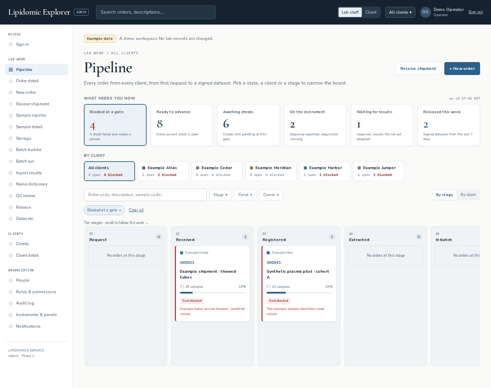
Proposal
Before · 9/10 px
After · floor 11 px
Token proposal in tokens.css: --text-xs: 11px (labels, pills, eyebrows at 10 px stay the single exception for the mono eyebrow because of its letter-spacing), --text-sm: 12px. Card: 242 → 200 px still fits with these sizes (see finding 6). The percentage goes; "7 of 24 samples registered" says what the bar measures.
Why. Lab screens are read at arm's length, often with gloves on a bench; 9 px mono is below what the muted colour can carry (10 px --muted on white passes contrast at 5.9:1, but at that size the glyphs do not resolve). The problem text on a blocked card is the most important line of the board and the smallest. How. Raise the floor to 11 px in one pass over globals.css and release.module.css; keep the mono eyebrow at 10 px with its tracking. The 28 % progress number duplicates the bar and the "x / y" text; drop it.
Phone: the registry scrolls sideways and the dataset page wraps hashes into 4-character lines
Current
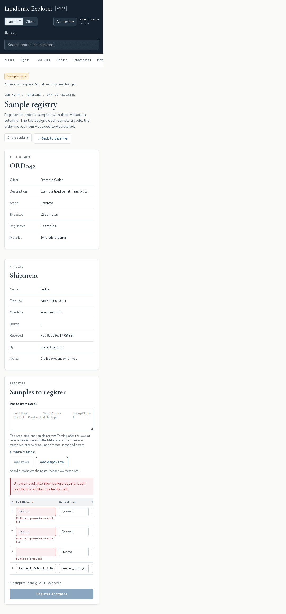
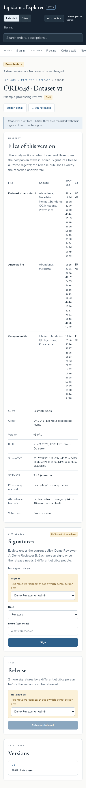
Proposal
| FullName * | Group1Term | Group2Term | Replicate | Patient |
|---|---|---|---|---|
| Ctrl_1 | Control | WildType | 1 | P01 |
| Ctrl_1 | Control | WildType | 2 | P02 |
| Treated | WildType | 1 | P03 |
Abundance, Metadata
5b85572ed378…ddaf0d copy
IS, QC, Provenance
9e275f35fb0b…6e91b copy
Registry: contain the grid (.grid-scroll { width: 0; min-width: 100% } or contain: inline-size on the panel), pin the FullName column with position: sticky, show a fade and a column count. Dataset: at ≤760 px render each file as a stacked block with a 12-character digest and copy; the full digest in a disclosure.
Why. Phones are secondary, but these two are the screens a lab manager or a PI would open from a phone (a quick fix to a row; a signature from a meeting). One pans the whole page; the other buries the action under a wall of hex. How. Two CSS containment lines for the grid; a @media (max-width: 760px) block for the file table using the existing .digest class plus a copy button, which desktop benefits from as well (finding 5).
Smaller notes
Each would fit in the same change set as the finding it relates to; none needs a new component.
- Top bar at 390 wraps into three rows (≈190 px)Brand, view switch, scope, user chip, sign-out and search stack before the nav strip. Proposal: brand + search + a "menu" button holding view switch, scope and sign-out.
- Order detail stepper at 390 shows 4 of 10 stepsThe current step (e.g. 08 Processed) is off-screen in the scroll region. Proposal: at ≤760 px a single line "Step 8 of 10 · Processed" over a 10-segment bar; the full stepper stays on desktop.
- Gate heading reads "Ready for extracted?" / "Ready for qc checked?"Stage names lower-cased into a question. Proposal: "Next gate · Extracted" with the stage name capitalised, and for the client view a statement, not a question: "At Processed · next: QC check".
- Client view shows staff vocabulary"Assigned to Demo Operator", "Review gate items" style gate names, "Every check must pass before this order moves forward". Proposal: hide the owner fact and reword the gate panel for clients ("What the lab is checking").
- Sign-in: in demo mode the disabled "Sign in" still looks primaryTwo stacked blue buttons; the one that works is second. Proposal: in demo mode render "Enter example workspace" first and the live form behind a secondary "Sign in with email" disclosure; keep the Yale SSO note.
- Order card progress "1 / 12 samples · 8 %" is unexplainedThe bar measures completed samples but the card never says so, and the percentage duplicates it. Proposal: "1 of 12 samples registered" (verb per stage) and no percentage (see finding 9).
- Focus ring does not cover select, textarea and menu summariesThe 3 px --blue outline is declared for button, a, input and tabindex; selects, textareas and the Stage/Panel/Owner/scope summaries fall back to the browser ring. Proposal: add them to the selector.
- Audit log: filter needs a click, rows have no hover, entity is textProposal: submit on change of Entity, row hover with --subtle, the entity as a small .state pill in "What", and group rows by lab day with a date heading.
- Datasets table: seven columns with digests and a UUIDReadable at 1440, cramped at 390. Proposal: Team project as "ffac34b7… · copy", digests as one "Provenance ▸" disclosure, status pill with the date.
- Release policy: the demo "Set as" actor box reads like a warningThe dashed --warning-tint box is used for the demo actor choice on four screens; it draws the eye before the real fields. Proposal: a neutral --subtle box with the "Example workspace" label, 11 px. The number input "Required signatures" can be 80 px wide instead of full width.
- Empty states end in a text link"No order has an accepted results file yet. Accept one in Ingest results first." Proposal: the action as a secondary button under the sentence, as the pipeline empty state already does with "Clear all filters".
- Choose client cards: role and action share one muted line"Client admin · Open workspace →" mixes a fact and the call to action. Proposal: role as a .pill.neutral, the arrow on its own line, the whole card already being the button.
- Registry grid: "Remove" as an underlined word per row; required mark only on FullNameProposal: an icon button with an accessible label (keeps the row quiet), and a "Clear all rows" link in the toolbar; "12 expected" turns red when the grid has more rows than expected.
- Name dictionary: a 33-item bullet list of unmapped analytesProposal: a table with an inline clean-name field per analyte and a save per row (or one "Save 33" at the bottom), plus a filter box; the "Add a name" form becomes the empty-row of that table.
- Pipeline menus at 390 are goodStage/Panel/Owner open as a full-width sheet with counts; chips truncate; the empty state names what to change. Keep as the reference pattern for other screens.
- Receive shipment is the reference formOrder select mirrored into the URL, facts on the right, condition as radio cards with consequences, explicit "Moves the order to Received…" note, pending label. The ingest and dictionary forms should look like it (finding 4).


Placeholders (not designed)
Still "This workspace is taking shape": New order, Sample detail, Storage, Batch builder, Batch run, QC review, Clients, Client detail, People, Roles & permissions, Instruments & panels, Notifications, Client home, Client order. The client can only reach a working order page through its URL (/orders/ORD041), which is captured here as the client order detail.
Method
Demo mode on the dev server (Turbopack, port 3110, no Supabase), Playwright Chromium, one browser context so the in-memory demo records persist across the flow: enter the example workspace → pipeline and its filters → order detail → receive ORD042 → register four samples (two duplicates, one empty FullName, one 90-character name) → ingest e2e/fixtures/sciex-synthetic.txt with a flagged blank and override → build, sign twice, release and withdraw ORD048 v1 → policy, datasets, audit log → switch to the Client view, choose Example Atlas, client home and order. Full-page captures at 1440×900 and 390×844; viewport-only captures where the fold matters. Numbers quoted in the findings (board width 1,162 vs 2,532 px; document width 1,080 px at 390; error colour rgb(82,100,119); font sizes 9–10 px) were measured in the page, not estimated from the images. The Next.js dev badge was hidden for the captures. Screenshots are palette PNGs.